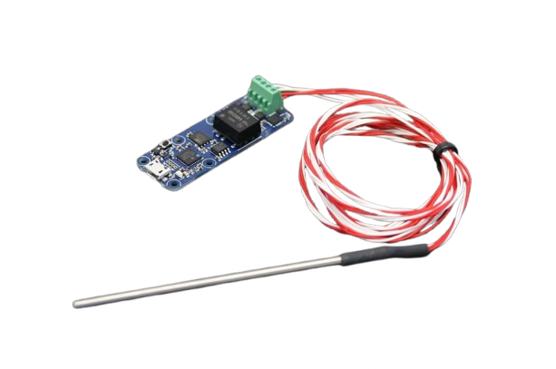
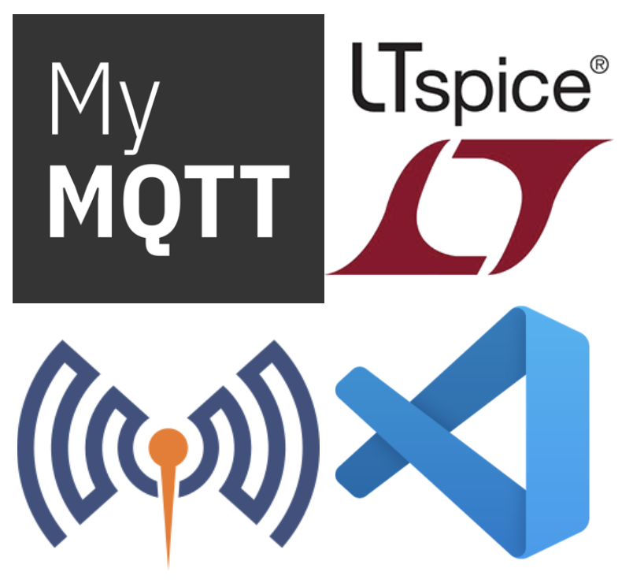
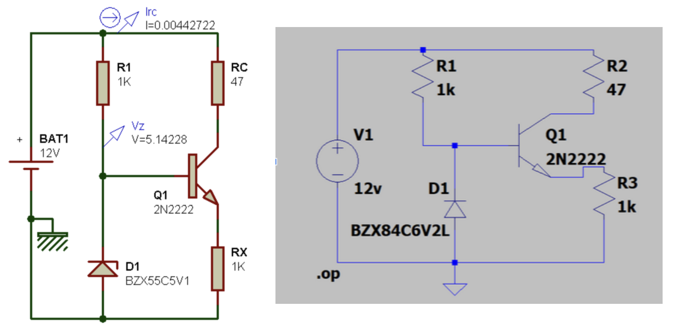
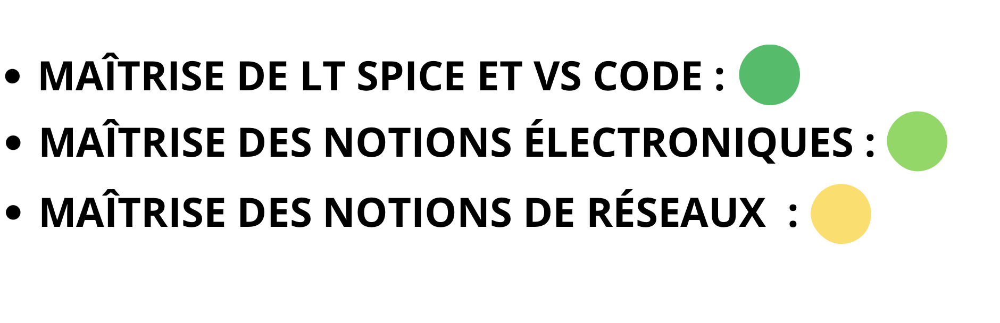
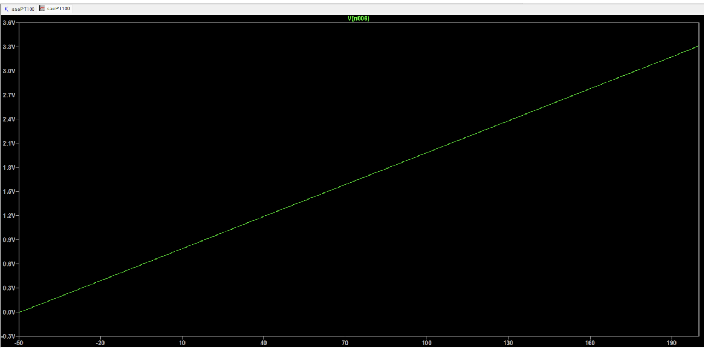

Contexte :
- L'objectif de ce projet est de concevoir un système complet de surveillance thermique capable de transmettre à distance la température d’une cuve vers un serveur Cloud. Ce dispositif permet une consultation des données en temps réel depuis n'importe quel poste connecté à Internet.
Logiciels et outils :
- Pour ce projet, j'ai commencé par simuler un circuit de conditionnement sur LTspice afin d'adapter le signal de la sonde PT100. Ensuite, j'ai programmé l'ESP32 sur VS Code pour convertir la tension reçue en température réelle. Enfin, pour la partie réseau, nous avons utilisé Mosquitto et l'application MyMQTT afin de recevoir et d'afficher les données en temps réel sur smartphone.
Ressenti :
- Le plus dur a été le démarrage, car nous étions en situation réelle. Il n'y avait pas de support de cours, seulement la consigne et quelques explications. Le choix du générateur de courant continu a été compliqué au début, mais une fois cette étape passée, tout s'est déroulé parfaitement. La partie réseau était aussi un peu difficile à comprendre, mais grâce à l'aide de mon camarade qui maîtrisait bien ce sujet, nous avons pu avancer facilement. Ce projet m'a appris à être plus autonome face à un problème technique.
Auto-Évaluation
Conclusion :
- Pour conclure, nous avons réussi à finaliser le projet dans les délais impartis. Ce qui est intéressant, c'est que malgré l'absence de support de cours au départ, j'ai fini par avoir une maîtrise totale du projet et de son déroulement. Cette expérience en situation réelle m'a prouvé que je pouvais m'adapter rapidement.